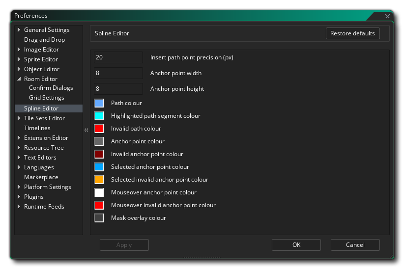

Les préférences de Spline Editor sont principalement utilisées pour définir l'aspect et l'apparence de l' éditeur de chemin, même si elles affectent certains autres aspects de l'EDI (comme l'éditeur de forme physique). Les options suivantes existent:
- Insérer la précision du point de chemin (px) - Ceci définit la valeur de précision (en pixels) pour l'insertion de points sur un chemin, à savoir: la souris doit être dans cette fourchette pour insérer le point plutôt que d'en ajouter un nouveau. La valeur par défaut est 20px.
- Largeur du point d'ancrage - Définit la largeur des points d'ancrage, en pixels. La valeur par défaut est 8px;
- Hauteur du point d'ancrage - Définit la hauteur des points d'ancrage, en pixels. La valeur par défaut est 8px;
- Couleur du chemin - La couleur à utiliser pour afficher le chemin au fur et à mesure que vous le modifiez. La valeur par défaut est (rgba) #FFFFFFFF.
- Couleur du segment de chemin en surbrillance - Couleur à utiliser pour mettre en évidence les segments de chemin sélectionnés. La valeur par défaut est (rgba) #FFFFFFFF.
- Couleur de chemin non valide - La couleur à utiliser pour mettre en évidence un chemin qui n'est pas valide. La valeur par défaut est (rgba) #FF0000FF.
- Couleur des points d'ancrage - Couleur à utiliser pour dessiner les points d'ancrage du tracé. La valeur par défaut est (rgba) #C0C0C0FF.
- Couleur des points d'ancrage non valide - Couleur à utiliser pour dessiner les points d'ancrage du tracé. La valeur par défaut est (rgba) #800000FF.
- Couleur de point d'ancrage sélectionnée - Couleur à utiliser pour dessiner les points d'ancrage de chemin qui ont été mis en surbrillance (sélectionnés). La valeur par défaut est (rgba) #00A4FFFF.
- Couleur de point d'ancrage non sélectionnée sélectionnée - Couleur à utiliser pour dessiner les points d'ancrage mis en surbrillance mais non valides. La valeur par défaut est (rgba) #FFA400FF.
- Couleur du point d'ancrage de la souris: couleur à utiliser pour dessiner les points d'ancrage actifs. La valeur par défaut est (rgba) #FFFFFFFF.
- Couleur du point d'ancrage invalide de la souris: couleur à utiliser pour dessiner les points d'ancrage actifs mais non valides. La valeur par défaut est (rgba) #FF0000FF.
- Couleur de superposition de masque - Définissez la couleur de superposition pour les masques s'ils sont activés (voir ci-dessus). La valeur par défaut est (rgba) #404040FF.